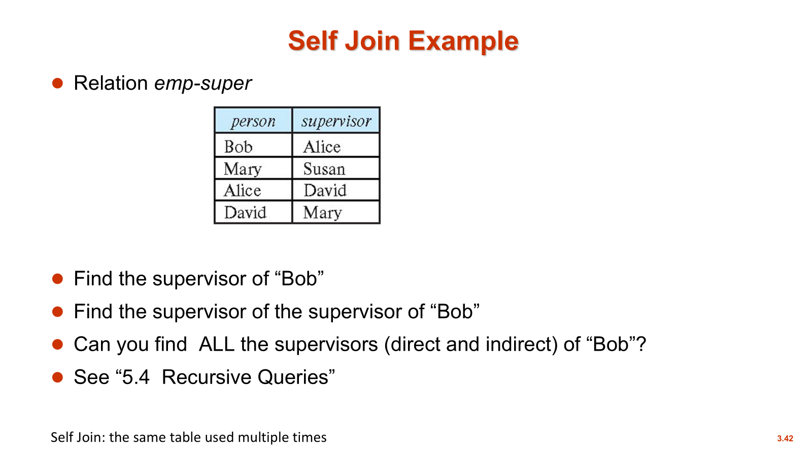
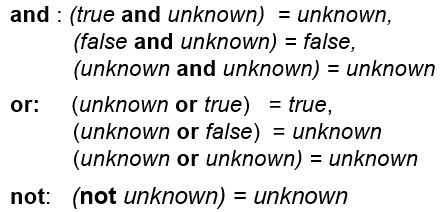

第三章 SQL简介
SQL 简介
SQL 中的域类型(Domain Types)
- char(n): 定长字符串
- varchar(n): 变长字符串, 最长为 n
- int: 整数类型
- smallint/bigint: 短整数/长整数
- numeric(p, d): 定点数类型. 其中 p 是总位数/总精度, d 是小数点后保留的位数
- float(n): 指定精度为 n 的浮点数(精度就是有效数字)
- real, double precision: 浮点数和双精度浮点数
表(Table)/关系
表的定义
一个表/关系是由拥有关系模式所指定的属性的 元组的多重集
-
列表, 集合与多重集
-
list: 普通列表, 有序, 允许重复;
-
set: 普通集合, 无序, 去重;
-
multiset: 多重集, 无序, 允许重复;
-
-
常见术语
- field: 字段--某个单元格的值
- row -- tuple -- record: 行--元组--记录
- column -- attribute: 列--属性/特性
- cardinality(基数): the number of tuples; 集合的势
- arity(元数): the number of columns;
表的创建
创建表的指令
创建一个表
创建时涉及到完整性约束(Integrity Constraints), 包括
-
主键约束(PK)
-
外键约束(FK)
-
非空约束(not null)
其中, 未满足完整性约束的数据库更新会被拒绝; 而属性声明的 PK 会自动满足 not null 条件
主键与外键定义
-- 列级约束(Column-level): 一次只能定义一个主键, 多了会报错
CREATE TABLE student(
sid int PRIMARY KEY,
...
);
-- 表级约束(Table-level): 定义复合主键(Composite PK)
CREATE TABLE taken(
sid int,
cid int,
...
PRIMARY KEY(sid,cid),
);
-- 外键定义与主键同理
CREATE TABLE taken(
sid int references student(sid),
...
);
CREATE TABLE taken(
sid int,
...
foreign key (sid,...) references student (sid,...),
);
A refers to B: A 指向 B
B is referenced by A: B 被 A 引用
其中 B 是主表, A 是从表
引用完整性(外键对于数据的一致性维护)
-
向子表插入不存在的记录
- 结果: 拒绝
-
删除父表的一条记录
-
禁止删除(rejected)
-
级联删除(cascade)
- 置为空值(null)
-
表的更新
- Insert
向表中插入一条新记录
insert into 表名称 values(‘属性 1 的值’, ‘属性 2 的值’, ...)
- Delete
删除表中的所有记录
Delete from 表名称
- Drop Table
删除整个表
Drop table 表名称
- Alter
修改表结构
Add(添加列): alter table 表名称 add 新属性名 数据类型
Drop(删除列): drop table 表名称 属性名
基本查询结构
- 经典的 SQL 查询语句
等价的关系代数表达式为: $\(\Pi_{A_1, A_2, \dots, A_n} (\sigma_P(r_1 \times r_2 \times \dots \times r_m))\)$
- 关于 SQL 的两个基本常识
- 结果仍然是一个关系——闭包性(Closure)
- SQL 对于大小写不敏感, 但建议关键字大写
SELECT 子句
- 重复值处理(Duplicates)
- distinct: 强制删除重复的行, 并且作用于后面所有的列. 即: 当有多个属性/列时, 去除的实际上是它们的 重复组合
- all: 明确指定不删除重复项. SQL 默认保留重复, 所以 all 一般很少显式地写出来
- 通配符和字面常量
- 星号
*(asterisk): 返回表中的所有列 - 常量(literal)
- 不带 from: 返回一个一行一列的单元值. 注: Oracle 不支持
- 带 from: 行数等于表的总行数, 列数为一的表
- 星号
-
算术运算和列重命名
- 算数表达式: select 子句中可以使用+, -, *, /进行计算
- AS 重命名: 使用‘AS’关键字给列进行重命名
-
SQL 示例
SELECT DISTINCT 列名称 FROM 表名称
SELECT ALL 列名称 FROM 表名称
SELECT * FROM 表名称
SELECT '100'
SELECT '100' FROM 表名称
SELECT name,salary*1.1 AS increased_salary FROM instructor
WHERE 子句
-
作用: 筛选符合条件的元组
-
数学对应: 关系代数中的选择(selection, \(\sigma\))
- 谓词 P
- 逻辑连接符: and, or, not
- 比较运算符: >, <, > =, <=, <>(不等于), =, BETWEEN...AND...
- 元组比较: 允许将多个属性打包成一个元组进行一次性比较
SQL 示例
SELECT name
FROM instructor
WHERE dept_name = 'SCI' AND salary=10000
-- 元组比较
WHERE (instructor.ID,dept_name)=(teachers.ID,'Biology')
-- 等价于:WHERE instructor.ID = teaches.ID AND dept_name = 'Biology'
FROM 子句
- 数学对应: 关系代数中的笛卡尔积
- 执行逻辑: 嵌套循环(Nested Loops), 如果需要满足条件的拼接则把一行放入结果集
- 点号表示法: 加入两表都有 ID 属性, 为了区分, 写为 A.ID 和 B.ID
-
使用 WHERE 子句添加条件: 连接条件进行笛卡尔积的筛选, 使得结果更有意义
-
SQL 示例
自然连接
-
特点
- 自动匹配: 不需要写 WHERE 条件
- 去重: 结果中的同名属性只保留一份
- 本质: 笛卡尔积+筛选
-
易错点
-
强制匹配所有同名属性
一个很经典的例子:
假设我们要查 "老师名字" 和 "他教的课程标题 (title)":
instructor表有属性:ID,name,dept_name,salarycourse表有属性:course_id,title,dept_name,credits
如果你写:
from instructor natural join teaches natural join course- 后果: 系统不仅会匹配
instructor.ID = teaches.ID, 还会因为instructor和course都有dept_name这一列, 而强制要求instructor.dept_name = course.dept_name. - 逻辑错误: 这意味着你只能查到 "老师在 自己所属的系 教课" 的情况. 如果一个生物系的老师去计算机系教一门课, 这条记录就会被 漏掉, 因为他们的
dept_name不相等.
-
-
解决方案
-
使用 join ... using(属性 1,...)
它只会在指定的属性上进行连接, 从而忽略掉其他的同名列
-
-
SQL 示例
SELECT name,title
FROM instructor NATURAL JOIN teachers
SELECT name,title
FROM instructor NATURAL JOIN teachers,course
WHERE teachers.coursel_id=course_id
SELECT name,title
FROM instructor JOIN course USING (course_id)
重命名(Rename)
-
特点
- 列重命名
- 表重命名
- 关键字‘AS’可省略
- 注: Oracle 中必须省略
-
处理多表查询的属性歧义
假设: Person 表和 Company 表都有 name 和 address 列.
> - 解决方案 A(全称法): 在属性前带上表名, 如 Person.name. > - 解决方案 B(别名法 - 更常用): 给表起个短别名, 如 Person p, Company c, 然后写 p.name. 这让代码更简洁易读.
-
关于自连接
-
最经典的用法: 处理层级结构

-
SQL 示例
SELECT DISTINCT T.name
FROM instructor AS T, instructor AS S
WHERE T.salary>S.salary AND S.dept_name='Comp.Sci'
字符串操作(String Operations)
- 字符串表示
- SQL 的字符串要用 单引号
'包裹. 如果要把单引号看作是普通字符的话, 那就用双引号将其包裹
- SQL 的字符串要用 单引号
- 模糊匹配
- 百分号‘%’: 匹配/代替任意长度的字符串
- 下划线‘_’: 匹配/代替一个字符
- 转义字符
- 如果内容本身带%或者_, 那么可以使用反斜杠 + %的方式书写
- 大小写敏感
- 大多数标准 SQL 中, 字符串匹配区分大小写, 但是有例外, 比如: MySQL 和 SQL Server
- 其他常用字符串函数
- 拼接(Concatenation): 使用‘||’将两个字符串连接起来. (MySQL 中使用 concat()函数, 写法有区别)
- 大小写转换: upper()转大写, lower()转小写
- 其他: length()找长度, substring()提取字符串
- SQL 示例
输出排序(Ordering)
- 如果要对结果排序, 则必须使用关键字
ORDER BY
注意: 如果不使用
ORDER BY, 输出结果的顺序是 **未定义的
-
升序: 使用关键字
ASC, 默认情况下都是升序 -
降序: 使用关键字
DESC -
SQL 示例
集合运算符(Set Operations)
- 表示
UNION: 相当于 orINTERSECT: 相当于 andEXPECT: 相当于 not
- 自动去重: 使用这些运算符会自动去重, 如果需要保留则需要在关键字后面加 ALL
- 数据库系统的实现
- 在 Oracle 中, 可以使用
UNION,UNION ALL,INTERSECT,MINUS, 但是没有INTERSECT ALL和MINUS ALL - 在 SQL Server 2000 中, 仅支持
UNION和UNION ALL - MySQL 不支持
INTERSECT
- 在 Oracle 中, 可以使用
空值(Null)
-
含义: unknown 或者 not exist
-
含 NULL 的运算
-
比较运算: 均被判定为 unknown
除了
IS NULL和IS NOT NULL, 它们可以用来检测空值和非空值 -
逻辑运算:

-
-
如果 WHERE 子句 的谓词结果是 unknown, 则结果会被视为 false
聚合函数(Aggregate Functions)
聚合函数(aggregate functions) 将一组(集合 / 多重集)值作为输入, 然后返回单个值. SQL 提供以下五种标准的内建聚合函数:
AVG(col): 平均值MIN(col): 最小值MAX(col): 最大值SUM(col): 求和COUNT(col): 计数(值的个数)